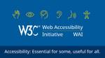

Web Accessibility Initiative (WAI)
https://www.w3.org/WAI/
Accessibility resources free online from the international standards organization: W3C Web Accessibility Initiative (WAI).
フィード

Updated Resource: How People with Disabilities Use the Web
Web Accessibility Initiative (WAI)
How People with Disabilities Use the Web is updated with new user stories (personas) and new videos highlighting “Accessibility: It’s about people”. It describes tools and approaches that disabled people use to interact with technology and it covers barriers that people experience because of inaccessible digital technology. The resource helps developers, designers, content creators, and others understand the reasons behind creating accessible digital products. To quote the new videos: Whatever your role, “You can help make technology accessible to me.”
8日前

For Review: ACT Rules Format 1.1 - First Public Working Draft
Web Accessibility Initiative (WAI)
Accessibility Conformance Testing (ACT) Rules Format 1.1 Working Draft is available for review. The ACT Rules Format defines a format for writing accessibility test rules. It helps developers of automated testing tools and manual testing methodologies to write, share, and implement test rules. The test rules contribute to consistent testing for accessibility standards compliance. Changes from ACT Rules Format 1.0 include: new secondary accessibility requirements and allowing subjective applicability statements. For an introduction to ACT resources, see the ACT Overview. Please submit any comments by 18 August 2024.
14日前
WCAG 2.2 in Dutch: Authorized Translation Published
Web Accessibility Initiative (WAI)
Richtlijnen voor Toegankelijkheid van Webcontent (WCAG) 2.2, the Dutch Authorized Translation of Web Content Accessibility Guidelines (WCAG) 2.2, is now available, following completion of the W3C Authorized Translations process. Other translations of WAI resources are listed in All WAI Translations. WAI encourages translations in all languages. If you might be interesting in translating resources, see Translating WAI Resources. Thank you to all who contribute to translations.
19日前
WCAG 2.2 in Catalan: Authorized Translation Published
Web Accessibility Initiative (WAI)
Directrius per a l’accessibilitat del contingut web (WCAG) 2.2, the Catalan Authorized Translation of Web Content Accessibility Guidelines (WCAG) 2.2, is now available, following completion of the W3C Authorized Translations process. Other translations of WAI resources are listed in All WAI Translations. WAI encourages translations in all languages. If you might be interesting in translating resources, see Translating WAI Resources. Thank you to all who contribute to translations.
1ヶ月前
For Review: WCAG 3 Working Draft Outcomes
Web Accessibility Initiative (WAI)
An updated WCAG 3 Working Draft is ready for review. This draft includes potential outcomes that we are exploring. The purpose of this draft is to: better understand the scope of user needs and how they could be addressed in an accessibility standard, request assistance in identifying gaps, and request assistance locating and conducting research to validate or invalidate the drafted outcomes.
2ヶ月前
Job Openings: Content Specialist, Technical Specialist
Web Accessibility Initiative (WAI)
W3C is seeking candidates from diverse backgrounds for two open positions in accessibility: 1. Accessibility Content Specialist for full-time remote work on accessibility materials. 2. Web Technical Specialist for full-time remote work in the USA on a project developing the technical infrastructure to support digital accessibility materials development and delivery. We welcome applications by 2 April 2024.
3ヶ月前
Call for Implementations: Digital Publishing Accessibility Candidate Recommendations
Web Accessibility Initiative (WAI)
Digital Publishing WAI-ARIA Module 1.1 (DPUB-ARIA) and Digital Publishing Accessibility API Mappings 1.1 (DPUB-AAM) are now Candidate Recommendation Snapshots. That means we’re seeking example implementations. These specifications help assistive technology users navigate through structural divisions in documents, for example, in ebooks. To learn more, see the e-mail announcement. Please submit implementations and any comments by 27 April 2024.
4ヶ月前
For Review: WAI-ARIA 1.3 First Public Working Draft
Web Accessibility Initiative (WAI)
Accessible Rich Internet Applications (WAI-ARIA) 1.3 Working Draft is available for review. WAI-ARIA provides an ontology of roles, states, and properties that define accessible user interface elements. These semantics allow authors to convey user interface behaviors and structural information to assistive technologies. Changes from ARIA 1.2 include: new roles (suggestion, comment, mark), new attributes (aria-description, aria-braillelabel, aria-brailleroledescription) and updates to aria-details to allow multiple IDREFS. Additional changes are in the changelog. Please submit any comments by 21 February 2024. For an introduction to WAI-ARIA and related resources, see the WAI-ARIA Overview.
5ヶ月前
WCAG 2.2 in Italian: Authorized Translation Published
Web Accessibility Initiative (WAI)
Linee guida per l'accessibilità dei contenuti Web (WCAG) 2.2, the Italian Authorized Translation of Web Content Accessibility Guidelines (WCAG) 2.2, is now available, following completion of the W3C Authorized Translations process. Other translations of WAI resources are listed in All WAI Translations. WAI encourages translations in all languages. If you might be interesting in translating resources, please see Translating WAI Resources. Thank you to all who contribute to translations.
7ヶ月前
Invitation: Evaluating Accessibility Symposium, Online, 16 November 2023
Web Accessibility Initiative (WAI)
You are invited to the symposium Evaluating Accessibility: Meeting Key Challenges, online 16 November 2023. Participation is free and registration is required by 13 November 2023. We encourage participation from researchers, academics, industry, government, and people with disabilities. Join us to explore practices and challenges monitoring and evaluating digital accessibility. The symposium will focus on: digital accessibility training, mobile accessibility, and artificial intelligence (AI). The link to register, the agenda, and more is in the symposium page.
8ヶ月前